Change analysis for Singapore for PRIMAP-hist v2.5.1_final compared
to v2.5_final
Overview over
emissions by sector and gas
The following figures show the aggregate national total emissions
excluding LULUCF AR6GWP100 for the country reported priority scenario.
The dotted linesshow the v2.5_final data.
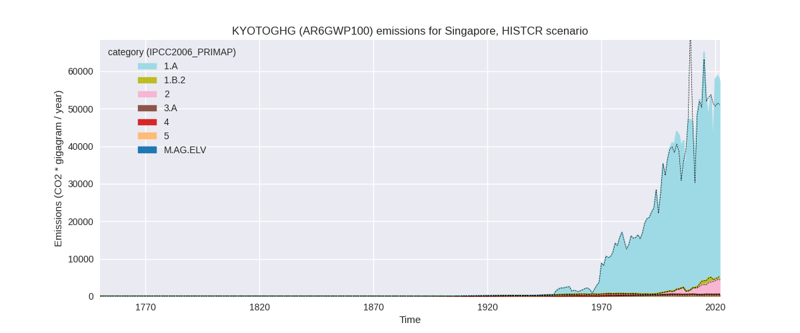
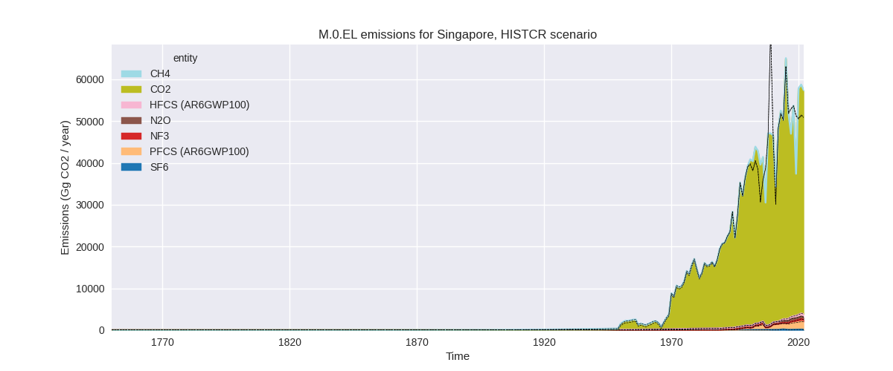
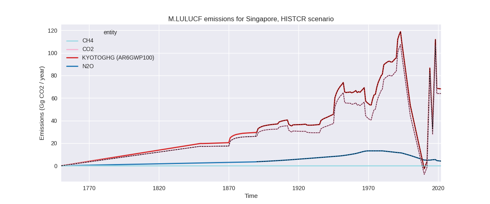
The following figures show the aggregate national total emissions
excluding LULUCF AR6GWP100 for the third party priority scenario. The
dotted linesshow the v2.5_final data.
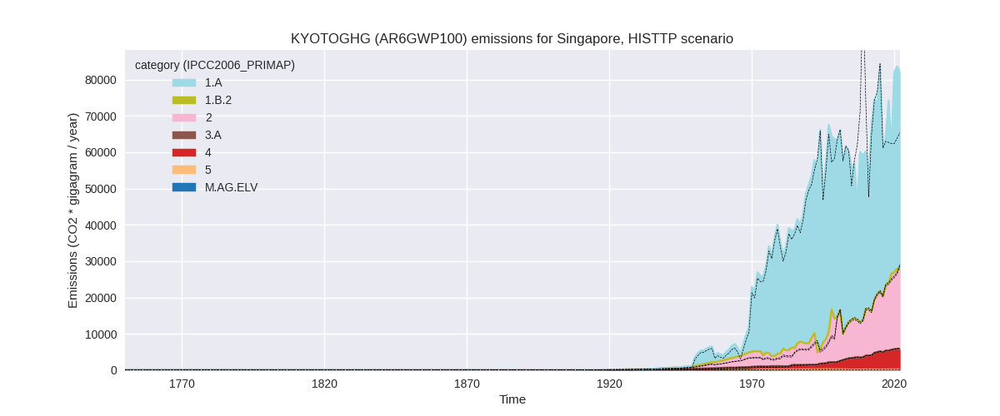
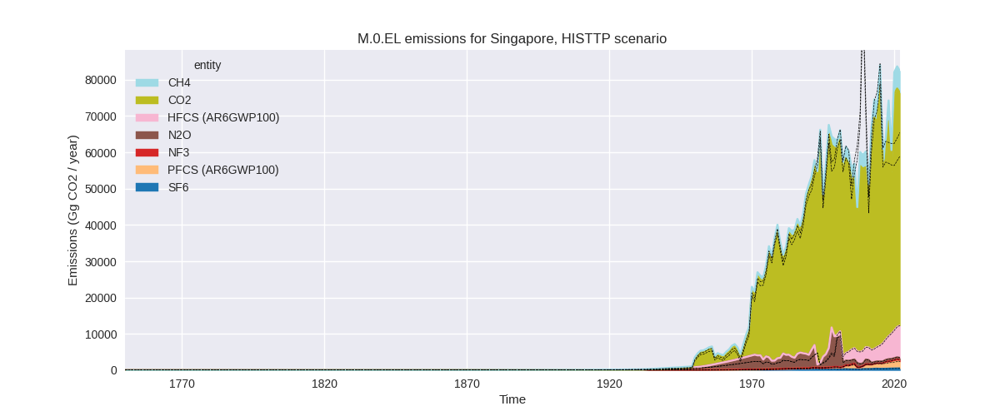
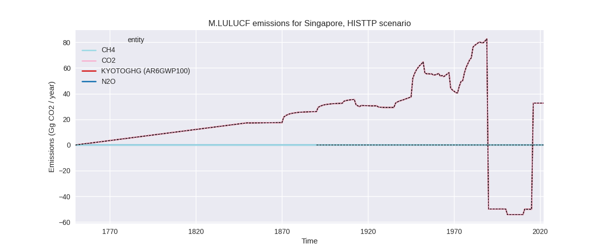
Overview over changes
In the country reported priority scenario we have the following
changes for aggregate Kyoto GHG and national total emissions excluding
LULUCF (M.0.EL):
- Emissions in 2022 have changed by 12.5%% (6396.38 Gg CO2 / year)
- Emissions in 1990-2022 have changed by -0.0%% (-13.96 Gg CO2 / year)
In the third party priority scenario we have the following changes
for aggregate Kyoto GHG and national total emissions excluding LULUCF
(M.0.EL):
- Emissions in 2022 have changed by 25.8%% (16878.89 Gg CO2 / year)
- Emissions in 1990-2022 have changed by 0.3%% (210.59 Gg CO2 / year)
Most
important changes per scenario and time frame
In the country reported priority scenario the
following sector-gas combinations have the highest absolute impact on
national total KyotoGHG (AR6GWP100) emissions in 2022
(top 5):
- 1: 1.A, CO2 with 7121.37 Gg CO2 / year (15.7%)
- 2: 1.B.2, CO2 with -643.71 Gg CO2 / year (-65.3%)
- 3: 2, CO2 with -44.18 Gg CO2 / year (-9.3%)
- 4: 1.A, N2O with -30.15 Gg CO2 / year (-12.8%)
- 5: 4, CH4 with 20.63 Gg CO2 / year (inf%)
In the country reported priority scenario the
following sector-gas combinations have the highest absolute impact on
national total KyotoGHG (AR6GWP100) emissions in
1990-2022 (top 5):
- 1: 1.B.2, CO2 with -24.08 Gg CO2 / year (-7.0%)
- 2: 1.A, CO2 with 7.86 Gg CO2 / year (0.0%)
- 3: 2, CO2 with 3.23 Gg CO2 / year (2.2%)
- 4: 1.A, N2O with -1.60 Gg CO2 / year (-0.8%)
- 5: 2, CH4 with 1.11 Gg CO2 / year (3.2%)
In the third party priority scenario the following
sector-gas combinations have the highest absolute impact on national
total KyotoGHG (AR6GWP100) emissions in 2022 (top
5):
- 1: 1.A, CO2 with 18423.38 Gg CO2 / year (51.3%)
- 2: 2, CO2 with -973.02 Gg CO2 / year (-9.1%)
- 3: 4, CH4 with -433.75 Gg CO2 / year (-7.4%)
- 4: 1.B.2, CH4 with -92.88 Gg CO2 / year (-20.2%)
- 5: 1.A, N2O with -31.63 Gg CO2 / year (-20.7%)
In the third party priority scenario the following
sector-gas combinations have the highest absolute impact on national
total KyotoGHG (AR6GWP100) emissions in 1990-2022 (top
5):
- 1: 2, N2O with 659.14 Gg CO2 / year (48.4%)
- 2: 1.A, CO2 with -385.69 Gg CO2 / year (-0.8%)
- 3: 1.B.2, CH4 with -42.05 Gg CO2 / year (-9.0%)
- 4: 4, CH4 with -13.14 Gg CO2 / year (-0.4%)
- 5: 2, CO2 with -9.90 Gg CO2 / year (-0.2%)
Notes on data changes
Here we list notes explaining important emissions changes for the
country. ’' means that the following text only applies to the TP time
series, while means that it only applies to the CR scenario. Otherwise
the note applies to both scenarios.
- 1.A, CO2: /TP/ Emissions in 2022 are higher due to
the new CDIAC 2023 data which shows higher growth past 2017 than the EI
data used in v2.5. Cumulative emissions are slightly lower as an
emissions peak before 2010 which was present in CDIAC 2020 data is not
present in CIDIAC 2022.
- 1.A, CO2: /TP/ Emissions in 2022 are higher due to
the new CDIAC 2023 data which shows higher growth past 2017 than the EI
data used in v2.5. Cumulative emissions are slightly lower as an
emissions peak before 2010 which was present in CDIAC 2020 data is not
present in CIDIAC 2022.
2022 emissions are 16% higher than in v2.5 because of the post 2017
growth rates of the new CDIAC data. Cumulative emissions are almost
unchanged because higher post 2017 emissions cancel with lower pre 2010
emissions.
- 1.B.2, CO2: 2022 emissions are lower than in v2.5
because EDGAR 8.0 emissions show a continuing steep decline in emissions
in the latest years which the extrapolation algorithm used in v2.5 for
2022 does not model.
- 2, N2O: higher cumulative emissions come from
higher pre-2000 emissions in 2.B (chemical industry) in EDGAR 8.0
compared to EDGAR 7.0.
Changes by sector and gas
For each scenario and time frame the changes are displayed for all
individual sectors and all individual gases. In the sector plot we use
aggregate Kyoto GHGs in AR6GWP100. In the gas plot we usenational total
emissions without LULUCF. ## country reported scenario
2022
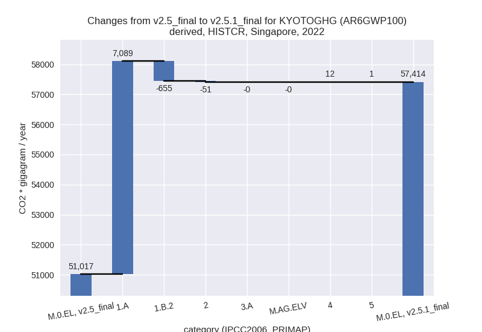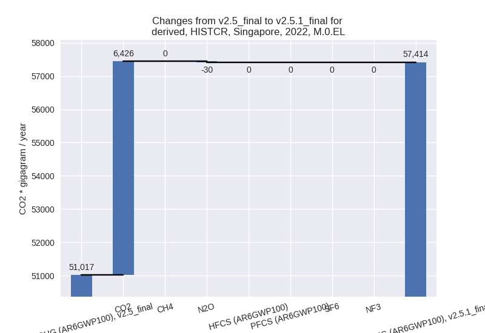
1990-2022
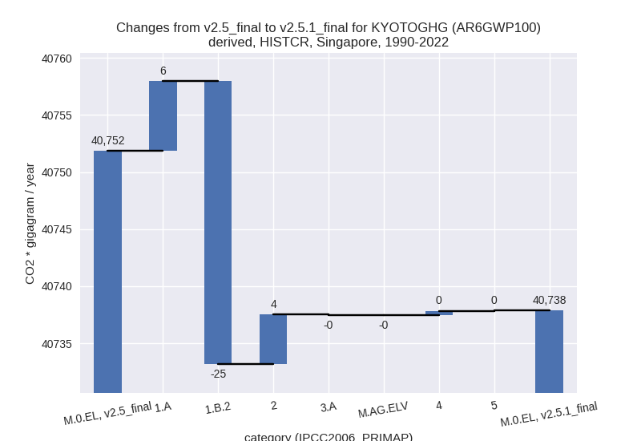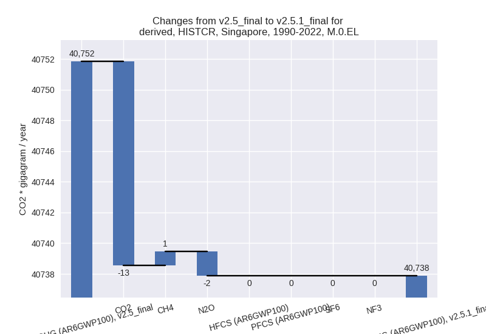
third party scenario
2022
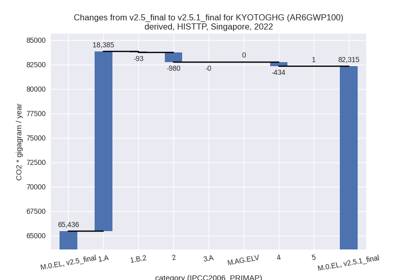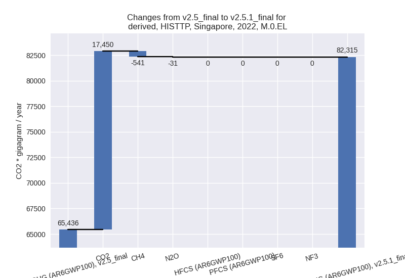
1990-2022
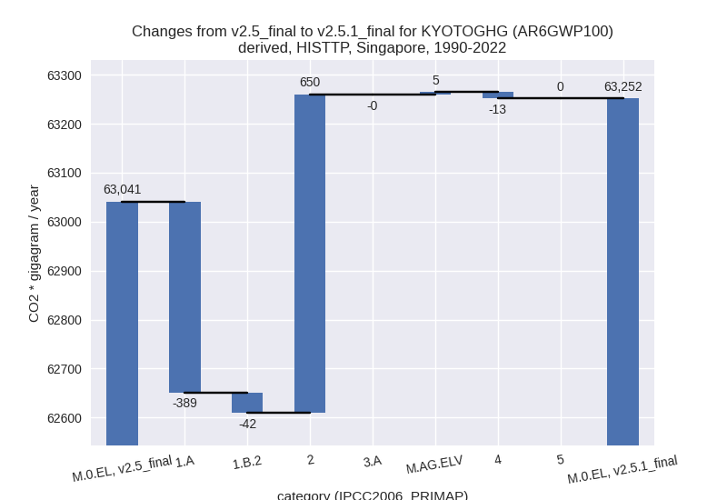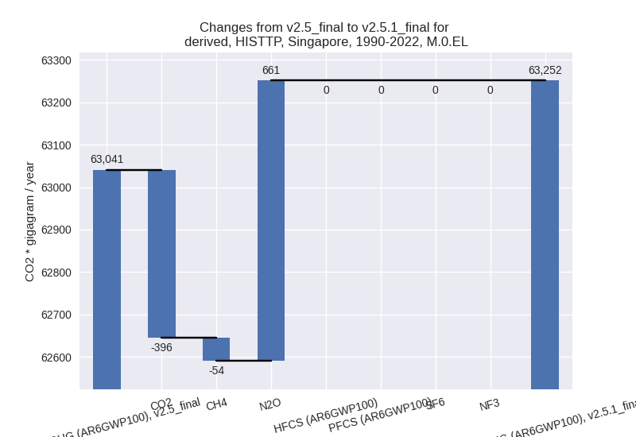
Detailed changes for the
scenarios:
country reported scenario
(HISTCR):
Most important changes
per time frame
For 2022 the following sector-gas combinations have
the highest absolute impact on national total KyotoGHG (AR6GWP100)
emissions in 2022 (top 5):
- 1: 1.A, CO2 with 7121.37 Gg CO2 / year (15.7%)
- 2: 1.B.2, CO2 with -643.71 Gg CO2 / year (-65.3%)
- 3: 2, CO2 with -44.18 Gg CO2 / year (-9.3%)
- 4: 1.A, N2O with -30.15 Gg CO2 / year (-12.8%)
- 5: 4, CH4 with 20.63 Gg CO2 / year (inf%)
For 1990-2022 the following sector-gas combinations
have the highest absolute impact on national total KyotoGHG (AR6GWP100)
emissions in 1990-2022 (top 5):
- 1: 1.B.2, CO2 with -24.08 Gg CO2 / year (-7.0%)
- 2: 1.A, CO2 with 7.86 Gg CO2 / year (0.0%)
- 3: 2, CO2 with 3.23 Gg CO2 / year (2.2%)
- 4: 1.A, N2O with -1.60 Gg CO2 / year (-0.8%)
- 5: 2, CH4 with 1.11 Gg CO2 / year (3.2%)
Changes in the main sectors for aggregate KyotoGHG (AR6GWP100)
are
- 1: Total sectoral emissions in 2022 are 53025.44 Gg
CO2 / year which is 92.4% of M.0.EL emissions. 2022 Emissions have
changed by 13.8% (6434.01 Gg CO2 /
year). 1990-2022 Emissions have changed by -0.0% (-18.66 Gg CO2 / year). For 2022 the
changes per gas
are:
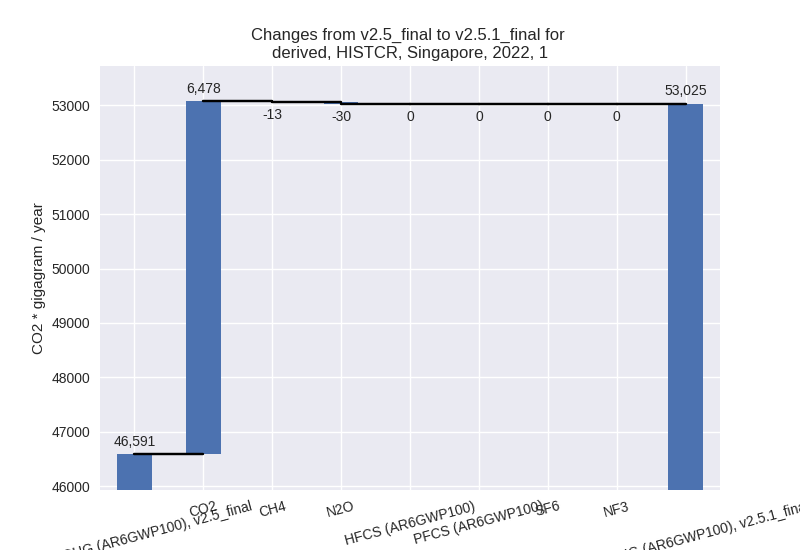
The changes come from the following subsectors:
- 1.A: Total sectoral emissions in 2022 are 52651.49
Gg CO2 / year which is 99.3% of category 1 emissions. 2022 Emissions
have changed by 15.6% (7088.74 Gg
CO2 / year). 1990-2022 Emissions have changed by 0.0% (6.11 Gg CO2 / year). For 2022 the
changes per gas
are:
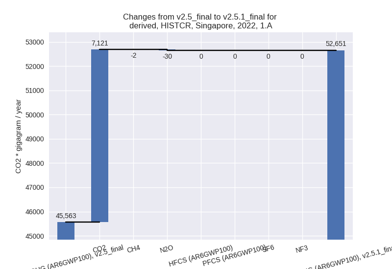
There is no subsector information available in PRIMAP-hist.
- 1.B.2: Total sectoral emissions in 2022 are 373.96
Gg CO2 / year which is 0.7% of category 1 emissions. 2022 Emissions have
changed by -63.6% (-654.73 Gg CO2 /
year). 1990-2022 Emissions have changed by -6.9% (-24.77 Gg CO2 / year). For 2022 the
changes per gas
are:
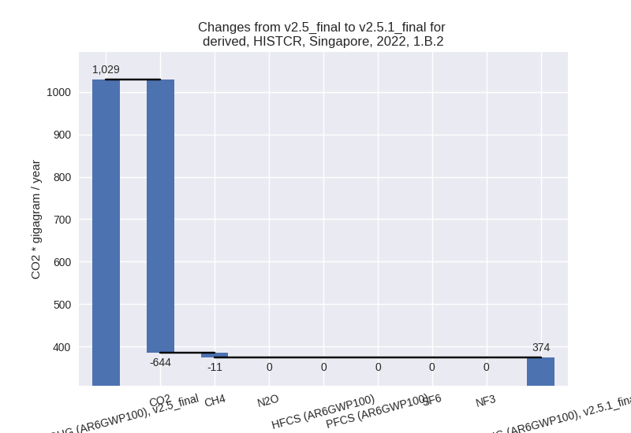
For 1990-2022 the changes per gas
are:
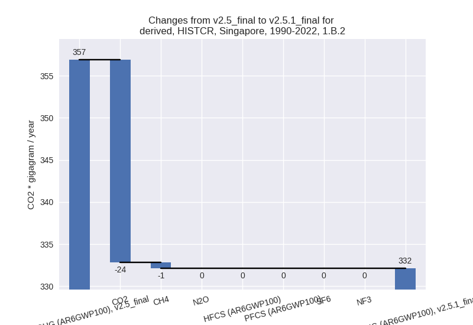
There is no subsector information available in PRIMAP-hist.
- 2: Total sectoral emissions in 2022 are 3842.89 Gg
CO2 / year which is 6.7% of M.0.EL emissions. 2022 Emissions have
changed by -1.3% (-50.93 Gg CO2 /
year). 1990-2022 Emissions have changed by 0.3% (4.34 Gg CO2 / year).
- M.AG: Total sectoral emissions in 2022 are 8.10 Gg
CO2 / year which is 0.0% of M.0.EL emissions. 2022 Emissions have
changed by -3.3% (-0.28 Gg CO2 /
year). 1990-2022 Emissions have changed by -0.4% (-0.05 Gg CO2 / year). For 2022 the
changes per gas
are:
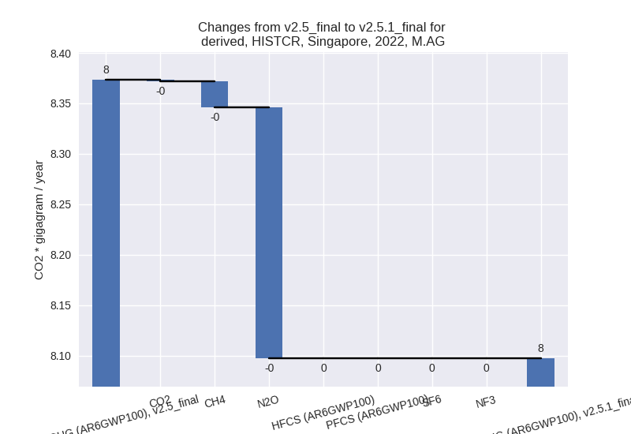
The changes come from the following subsectors:
- 3.A: Total sectoral emissions in 2022 are 5.17 Gg
CO2 / year which is 63.9% of category M.AG emissions. 2022 Emissions
have changed by -3.4% (-0.18 Gg CO2
/ year). 1990-2022 Emissions have changed by -0.2% (-0.01 Gg CO2 / year). For 2022 the
changes per gas
are:
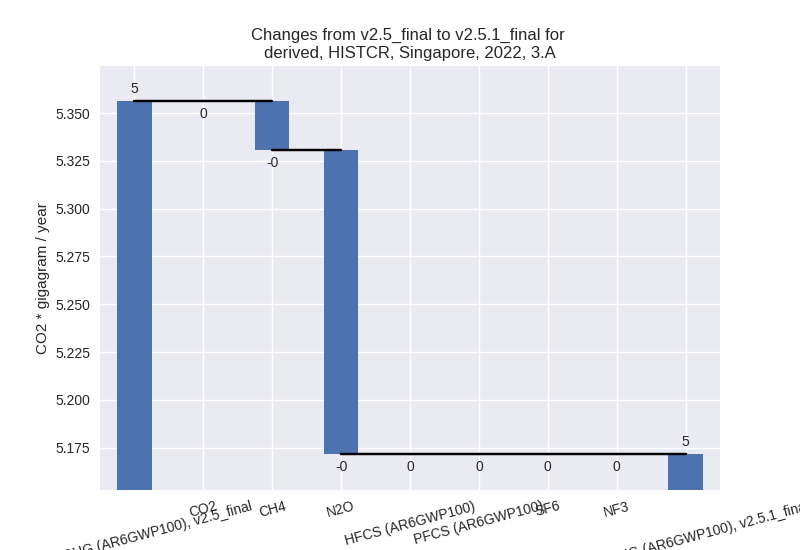
There is no subsector information available in PRIMAP-hist.
- M.AG.ELV: Total sectoral emissions in 2022 are 2.93
Gg CO2 / year which is 36.1% of category M.AG emissions. 2022 Emissions
have changed by -3.0% (-0.09 Gg CO2
/ year). 1990-2022 Emissions have changed by -1.2% (-0.03 Gg CO2 / year). For 2022 the
changes per gas
are:
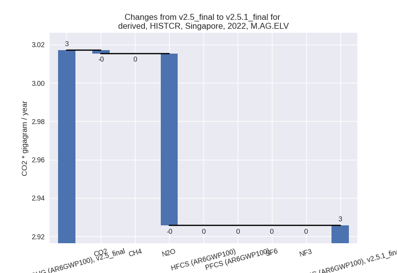
There is no subsector information available in PRIMAP-hist.
- 4: Total sectoral emissions in 2022 are 338.12 Gg
CO2 / year which is 0.6% of M.0.EL emissions. 2022 Emissions have
changed by 3.8% (12.37 Gg CO2 /
year). 1990-2022 Emissions have changed by 0.1% (0.37 Gg CO2 / year). For 2022 the
changes per gas
are:
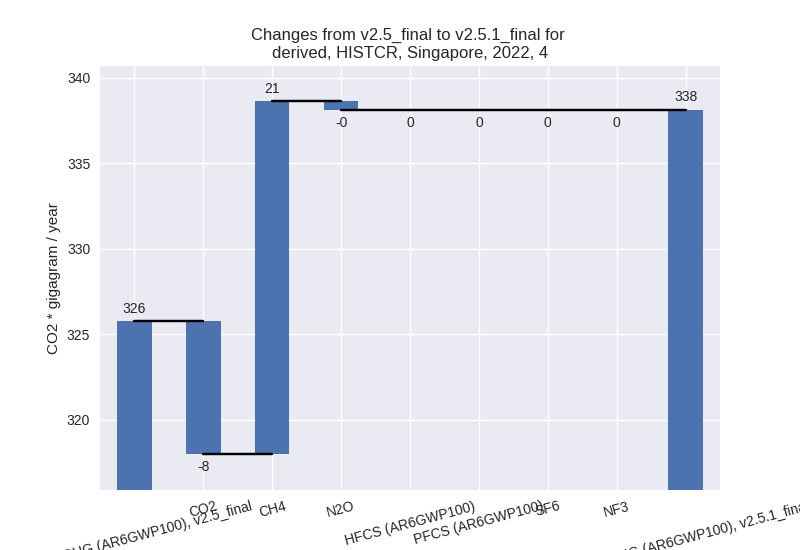
- 5: Total sectoral emissions in 2022 are 199.18 Gg
CO2 / year which is 0.3% of M.0.EL emissions. 2022 Emissions have
changed by 0.6% (1.20 Gg CO2 /
year). 1990-2022 Emissions have changed by 0.0% (0.04 Gg CO2 / year).
third party scenario (HISTTP):
Most important changes
per time frame
For 2022 the following sector-gas combinations have
the highest absolute impact on national total KyotoGHG (AR6GWP100)
emissions in 2022 (top 5):
- 1: 1.A, CO2 with 18423.38 Gg CO2 / year (51.3%)
- 2: 2, CO2 with -973.02 Gg CO2 / year (-9.1%)
- 3: 4, CH4 with -433.75 Gg CO2 / year (-7.4%)
- 4: 1.B.2, CH4 with -92.88 Gg CO2 / year (-20.2%)
- 5: 1.A, N2O with -31.63 Gg CO2 / year (-20.7%)
For 1990-2022 the following sector-gas combinations
have the highest absolute impact on national total KyotoGHG (AR6GWP100)
emissions in 1990-2022 (top 5):
- 1: 2, N2O with 659.14 Gg CO2 / year (48.4%)
- 2: 1.A, CO2 with -385.69 Gg CO2 / year (-0.8%)
- 3: 1.B.2, CH4 with -42.05 Gg CO2 / year (-9.0%)
- 4: 4, CH4 with -13.14 Gg CO2 / year (-0.4%)
- 5: 2, CO2 with -9.90 Gg CO2 / year (-0.2%)
Changes in the main sectors for aggregate KyotoGHG (AR6GWP100)
are
- 1: Total sectoral emissions in 2022 are 54877.31 Gg
CO2 / year which is 66.7% of M.0.EL emissions. 2022 Emissions have
changed by 50.0% (18291.72 Gg CO2 /
year). 1990-2022 Emissions have changed by -0.9% (-431.38 Gg CO2 / year). For 2022
the changes per gas
are:
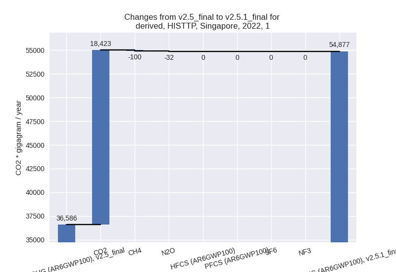
The changes come from the following subsectors:
- 1.A: Total sectoral emissions in 2022 are 54508.36
Gg CO2 / year which is 99.3% of category 1 emissions. 2022 Emissions
have changed by 50.9% (18384.62 Gg
CO2 / year). 1990-2022 Emissions have changed by -0.8% (-389.33 Gg CO2 / year). For 2022
the changes per gas
are:
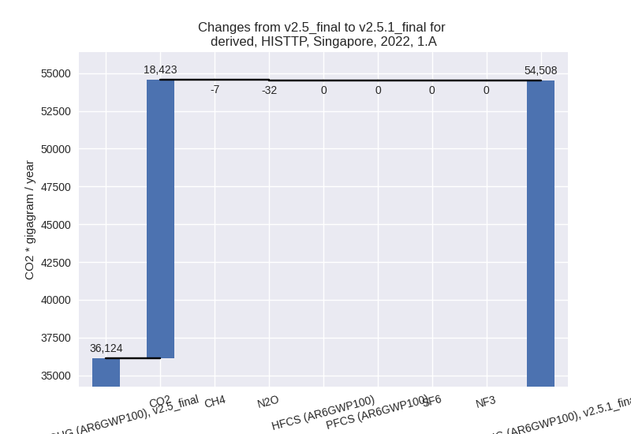
There is no subsector information available in PRIMAP-hist.
- 1.B.2: Total sectoral emissions in 2022 are 368.95
Gg CO2 / year which is 0.7% of category 1 emissions. 2022 Emissions have
changed by -20.1% (-92.90 Gg CO2 /
year). 1990-2022 Emissions have changed by -9.0% (-42.05 Gg CO2 / year). For 2022 the
changes per gas
are:
For 1990-2022 the changes per gas
are:
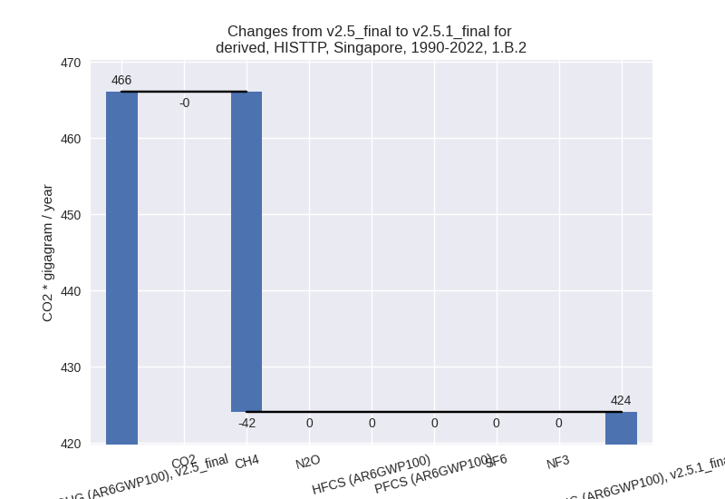
There is no subsector information available in PRIMAP-hist.
- 2: Total sectoral emissions in 2022 are 21664.57 Gg
CO2 / year which is 26.3% of M.0.EL emissions. 2022 Emissions have
changed by -4.3% (-979.76 Gg CO2 /
year). 1990-2022 Emissions have changed by 5.8% (650.34 Gg CO2 / year). For 2022 the
changes per gas
are:
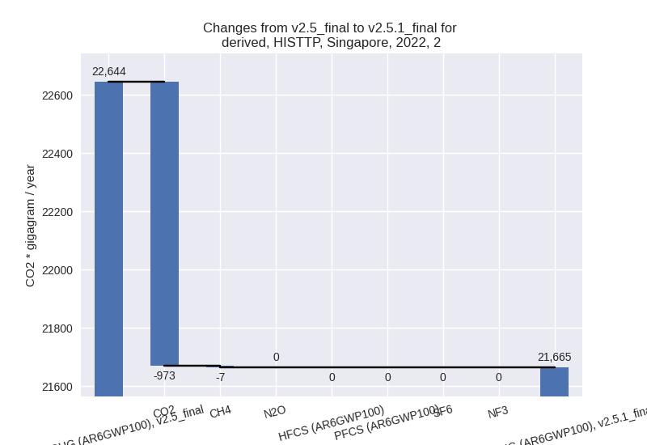
For 1990-2022 the changes per gas
are:
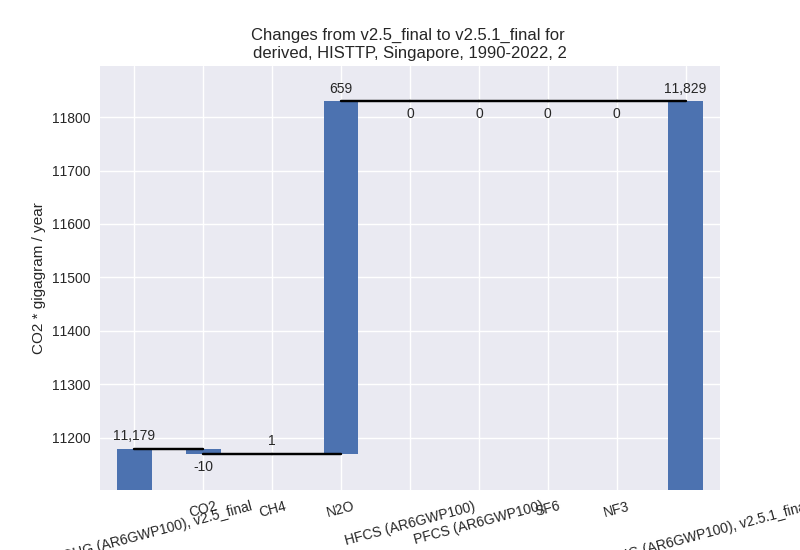
- M.AG: Total sectoral emissions in 2022 are 20.89 Gg
CO2 / year which is 0.0% of M.0.EL emissions. 2022 Emissions have
changed by 0.3% (0.07 Gg CO2 /
year). 1990-2022 Emissions have changed by 25.9% (4.75 Gg CO2 / year). For 1990-2022
the changes per gas
are:
The changes come from the following subsectors:
- 3.A: Total sectoral emissions in 2022 are 4.92 Gg
CO2 / year which is 23.5% of category M.AG emissions. 2022 Emissions
have changed by -1.2% (-0.06 Gg CO2
/ year). 1990-2022 Emissions have changed by -0.2% (-0.01 Gg CO2 / year).
- M.AG.ELV: Total sectoral emissions in 2022 are
15.98 Gg CO2 / year which is 76.5% of category M.AG emissions. 2022
Emissions have changed by 0.8% (0.13
Gg CO2 / year). 1990-2022 Emissions have changed by 38.5% (4.76 Gg CO2 / year). For 1990-2022
the changes per gas
are:
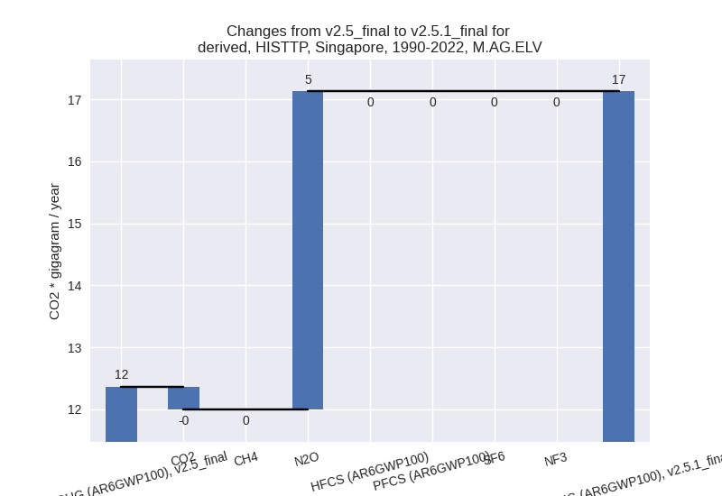
There is no subsector information available in PRIMAP-hist.
- 4: Total sectoral emissions in 2022 are 5553.40 Gg
CO2 / year which is 6.7% of M.0.EL emissions. 2022 Emissions have
changed by -7.3% (-434.34 Gg CO2 /
year). 1990-2022 Emissions have changed by -0.4% (-13.16 Gg CO2 / year). For 2022 the
changes per gas
are:
- 5: Total sectoral emissions in 2022 are 199.18 Gg
CO2 / year which is 0.2% of M.0.EL emissions. 2022 Emissions have
changed by 0.6% (1.20 Gg CO2 /
year). 1990-2022 Emissions have changed by 0.0% (0.04 Gg CO2 / year).